Getting Started
How do I start using GitHub?
1) Install Git for your operating system.
It is easiest to use the default installation directory; however, if you want to the change the installation location, make note of the new directory because you will need to direction Rstudio, GitHub Desktop or other programs to that location. More on this below…
2) Direct RStudio to Git to enable version control
Git/SVN is found in the Global Options under “Tools”
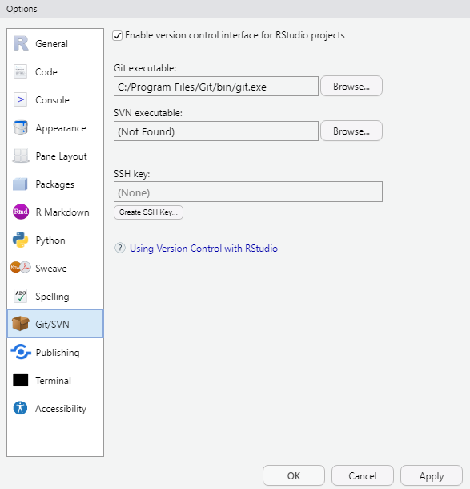
3) Create a GitHub account
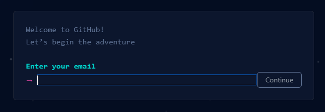
4) Choose a GUI client.
Although Git comes with a GUI (specifically, GitGUI), there are countless other GUI’s available, that each boast various utilities and add-ins may cater to different needs.
We will cover GitHub Desktop in this tutorial, since it is relatively simple and is directly offered by GitHub
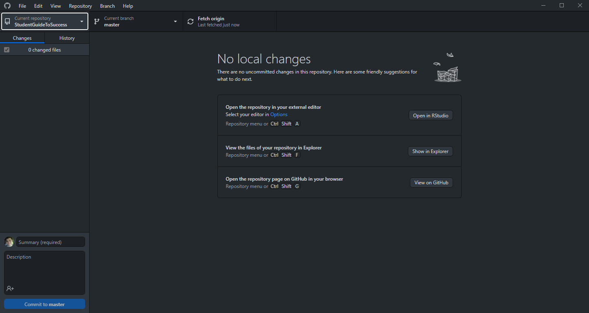
5) Create a new, version controlled Rstudio project
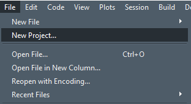
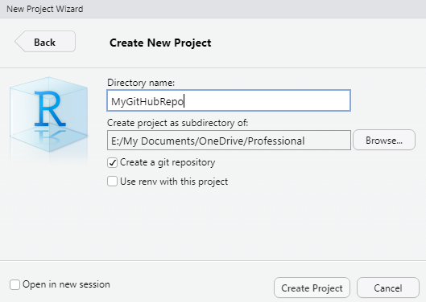
…or enable version control for an existing Rstudio project.
Once version control has been enabled in the Global Options, you can it on for any pre-existing R Project in the Project Options.
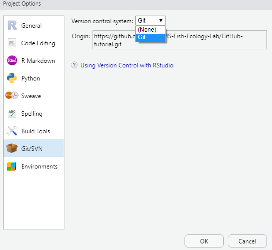
6) Add your local repository to GitHub Desktop
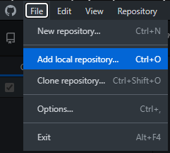
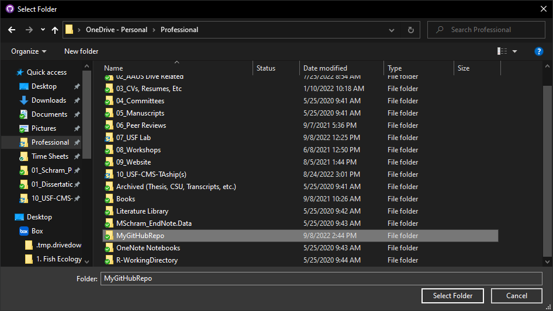
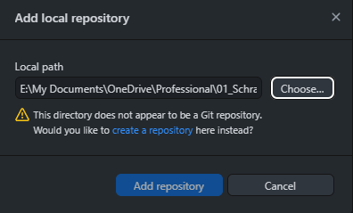
7) Publish your initial repository and any relevant files/code
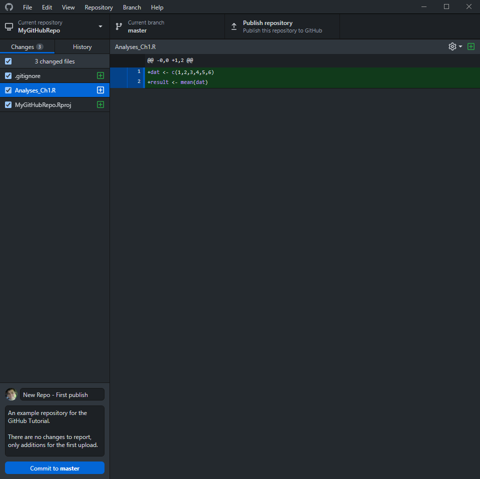
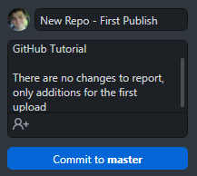
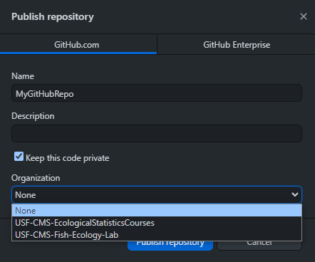
GitHub will now detect and display any changes to the relevant files
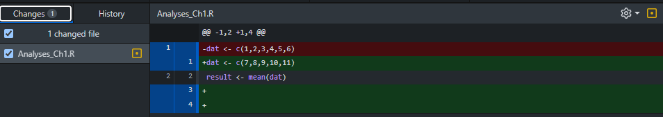
You can then review the history of committed changes
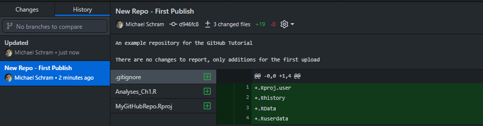